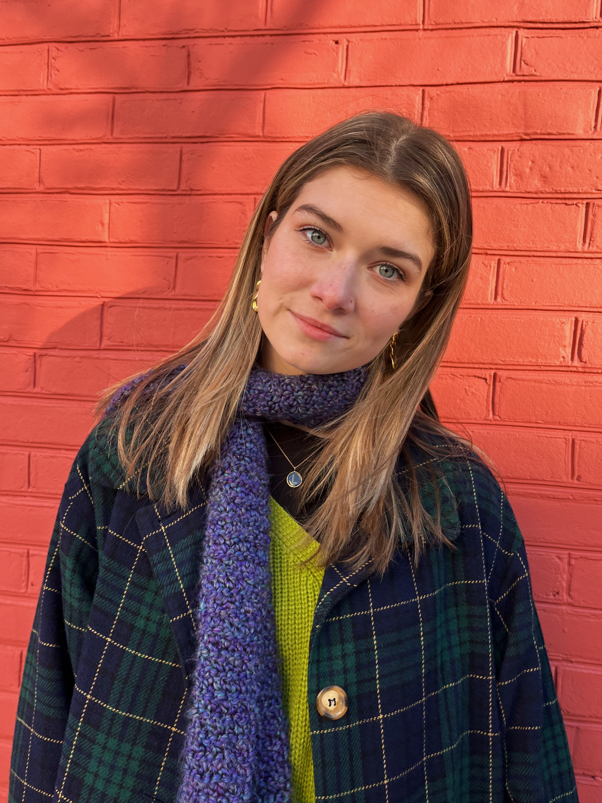

Journalism Student
I write and record radio packages for the weekly news roundup while covering campus stories. As a press team member, I review and photograph concerts in the D.C. area. I developed my photography skills and managed time effectively to produce high-quality concert images.
As a member of the marching band, I perform at all home football games. I also lead and mentor fellow trumpet players, ensuring musical and marching excellence. I attend leadership meetings and teach marching fundamentals to new members.
As the Digital Marketing Specialist, I manage social media and digital marketing efforts for my sorority. I photograph and promote philanthropy events for the Ronald McDonald House. I am gaining experience in running successful projects and working in a team-oriented environment.